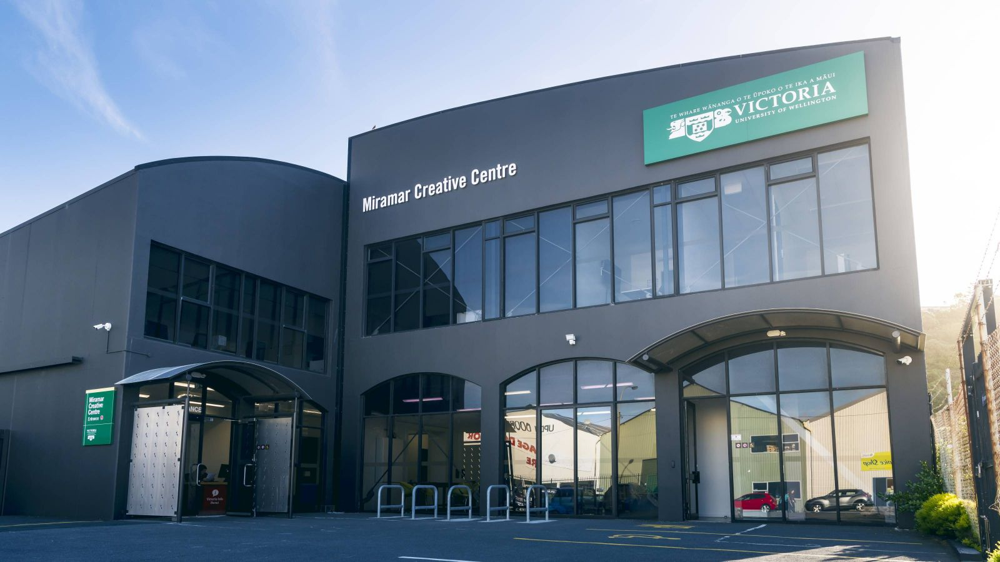

State of Play - Jan 18
A New Year, a new you! I made one resolution this year - to use buttload (butt being a historical measurement for a barrel full of whiskey) as much as possible. So there’s going to be a buttload of info about the sort of things people are thinking about at this time of year - namely:
What the hell am I doing with my life and why do I spend so much time in an air conditioned concrete box with a bunch of strangers creating widgets?
There’s no coincidence that this is in your inbox on probably the second day of your first week back. So, if you’ve been pondering these sorts of questions, whilst ‘summer beer-gazing’ then read on, because todays episode is all about the State of Play in Tech Ed.
What you can expect in this issue:
- How to not be a truck driver anymore
- A guest spot from Doug Easterly - Head of VUW Design School
- How to change your career to a web tech one right now
- What a bunch of (Javascript) devs in Wellington earn
- How to never have to go into the office ever again
Read time about 7 min
Computers have eaten all the things!
20 years ago if you were heading off anywhere for a reasonable amount of time, you might have needed to take:
a camera, notepad, pens, pencils, Walkman™, Discman™, Camcorder, flashlight, phone card, wrist watch, egg timer, several novels, Filofax™, diary, newspaper, Rolodex, airline ticket, business cards and a dozen other things.
It’s crazy to think that in such a short space of time, all of those things have all but been replaced by a small black rectangle you keep in your pocket. Even crazier, is thinking about all the jobs creating those items used to generate which no longer exist.
According to the US Census Bureau, in 2014 the most common job in the USA was truck driver:
But with autonomous vehicles and the new Tesla self-driving truck on the horizon it looks like all that is set to change… again.
Change is the only constant. There is nothing permanent except change.
- Heraclitus
Interestingly and somewhat unsurprisingly, “software developer” is starting to take over some states as the most common job title.
Meanwhile back in Wellington NZ, companies and recruiters are desperately trying to find the same developers. Many junior roles start at 50-60k, and within three years a developer will be considered intermediate (5 years senior) level earning upwards of 100k-200k+. Many more, earn much more than that and all the while working in a progressive industry with a bright future. It’s off the hook (as the cool kids [or maybe not cool, what do I know?] in the 90’s used to say).
Welly-town, the place to be
Wellington is a hotbed of technical creativity. One of the organisations at the centre of this is the Victoria University School of Design down on Vivian Street.
The most Wellington photo in the history of Wellington photos
For anyone wanting to go deep on an education in tech, and be taught by and interact with the best people in the business, there’s not many better places to be than VUW Design School. It was only a few short years ago I was there myself, and had the privilege of being taught by Doug Easterly who’s now head of school and has graciously put a guest spot piece together about the current goings on at VUW.
Doug Easterly on VUW Design School
2017 has been a busy year for the School of Design at Victoria. We have launched two new Master’s degrees – the Masters of User Experience Design (MUXD) and the Master of Design Technology (MDT) Both degrees are intensive 1-year programmes where the MDT is focused on design for the entertainment industries (VFX, gaming and VR) and the MUXD is a conversion masters - getting students up to speed with design approaches related to the burgeoning user experience design field. We have also expanded the number of undergraduate majors from 3 to 5: Communication Design and Interaction Design will be joining Media Design, Industrial Design and Design for Social Innovation staring in 2018.
If any former students were wondering where all the Web design courses were in our curriculum – here they are! We have gone from 1 offering to 5 thanks to the new MUXD programme and Interaction Design major. Similarly we have tripled the number of courses in animation/VFX related topics over the past 2 years.

Speaking of VFX, one of our greatest highlights to mention is the new Miramar Creative Centre located on Park Road, just down the road from Weta and Park Road Post. The centre features state of the art facilities that have already been delivering a variety of programmes and initiatives in part of our growing collaboration with the creative industries in Miramar (seminars, workshops, mentoring sessions, guest lectures, etc.) - and the ribbon cutting was only this past August! The new MDT degree is based here and students are now busy with the new mocap studio and suite of Red cameras creating capstone productions this summer in conclusion of their degree.
With all of this growth we have been hiring new staff, truly some world-renowned experts in their fields of expertise. I’m sure they would be glad to hear from you if anyone is interested in studying or collaborating with them – Raqi Syed Catherine Caudwell, David Hakaraia, Tom White and Zach Dodson. We hope to be announcing a few more new appointments sometime this summer!
Ngā mihi
Douglas Easterly, Head of School
School of Design, Victoria University of Wellington
A Rose by any other name…
If you like the idea of being a Web Developer, but the title seems completely alien to you when you think of your own career prospects, please indulge me (a BDes/BA major in Theatre and Film) to explain how I shouldn’t be, but somehow ended up as a dev.
I scored a C+ in my final year of school for Stats, and didn’t even attempt Calc as it looked foreign, unintelligible and quite frankly BORING AS HEEEELLLLLLLLLLLLL. Imagine the irony this year when I realised that I not only loved calculus, but had inadvertently taught myself it, whilst building websites for people over the last 10 odd years.
Development for me is a bit like playing Sudoku all day. Or playing through Half-life 2 using cheat codes. It’s a video game with increasingly complex puzzles, and increasingly elegant solutions combined with dirty hacks. If you’ve ever enjoyed video games or puzzles, there’s a chance you might enjoy it too.
With increasing life (and work) expectancy you might have 10-50 years of professional career ahead of you. Or you might be working in a dying industry. If so, then the following info is specifically for you, and it’s never too late to make a change.
If you wanna make the world a better place,
Take a look at yourself and then make a change
- Michael Jackson (Man in the Mirror)
Take a 9 week bootcamp course that places 86% of it’s graduates at Dev Academy
Dev Academy is Wellington’s own developer bootcamp course with an extremely good track record for placing grads, many of which now have roles in some of New Zealand’s top web tech companies (see the image above). The course involves building a web app from start to finish, delivering a whole range of high value skills in a very short time. This is the course I’d do if I was looking for a lightening fast transition from another industry into web tech.
Teach yourself to be awesome with FreeCodeCamp
The FreeCodeCamp Front-end developer course is around 450 hours all up. If you spent 2 hours a day for the next 30 weeks you’d complete it, and be one of the most qualified junior front-end devs I’ve ever met. Free and easy.
NZ tech company radar
One of the most amazing things about development is the ability to work from right where you are. In fact, one of New Zealand’s very own tech darlings Timely, has over 40 staff and they all work remotely.
That’s right folks, Timely have grown to tens of thousands of customers across over 80 countries without a traditional office. Timely provide salons and spas with online software to run their day to day business. It’s a great example of a product operating in a niche, providing specialised software and leveraging niche industry knowledge to deliver a quality product.
Work like a bawce
Contrary to the age old belief (by insecure managers probably) that people slack off whilst working from home, the numbers are out and the opposite is true - people find that they get more accomplished in a shorter amount of time remote working.
There’s also increasing evidence that open plan offices don’t work. The Journal of Environmental Psychology has even said “Enclosed private offices clearly outperformed open-plan layouts in most aspects of IEQ (Indoor Environmental Quality)”.
As a developer logging code to an online repository, every line of code output is measurable. So it’s no surprise that with demand up for dev, and the stats on productivity in, companies are adopting increasingly flexible work patterns to attract devs.
In fact, there are now dozens of sites advertising remote developer jobs, and many companies looking further afield than their own back yard to source dev who fit the bill.
Rounding out
So there it is folks, follow those few simple steps above, and be sure to always remember that:
- Life is a game and your player only has 1up
- It’s only too late to change if you’re dead
- Developer, developers, developers
- Who dares wins
you’ll likely be fine. Until next time.